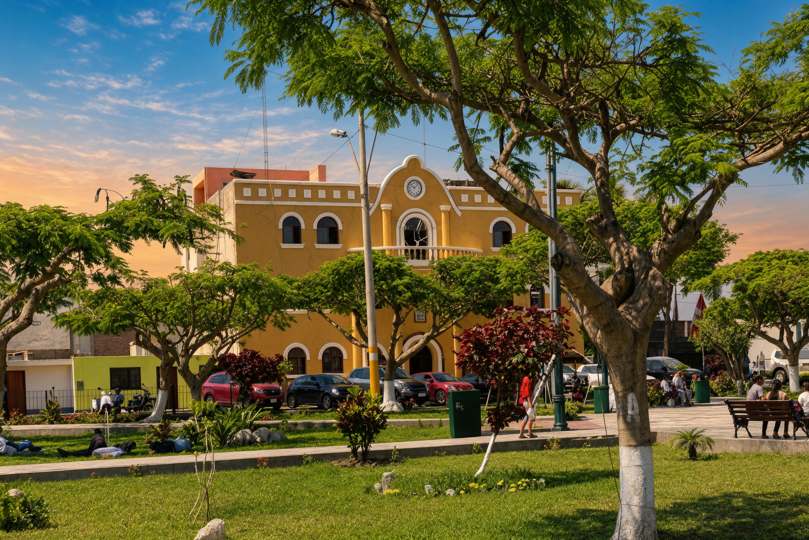
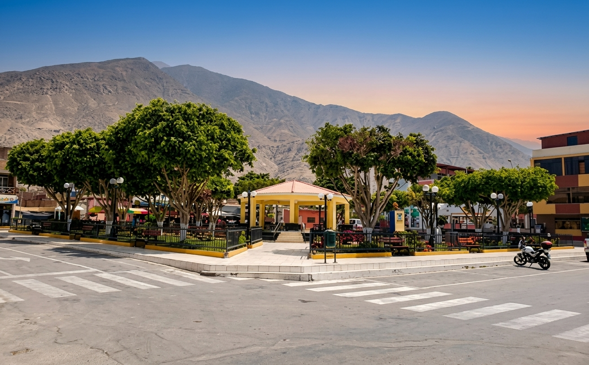
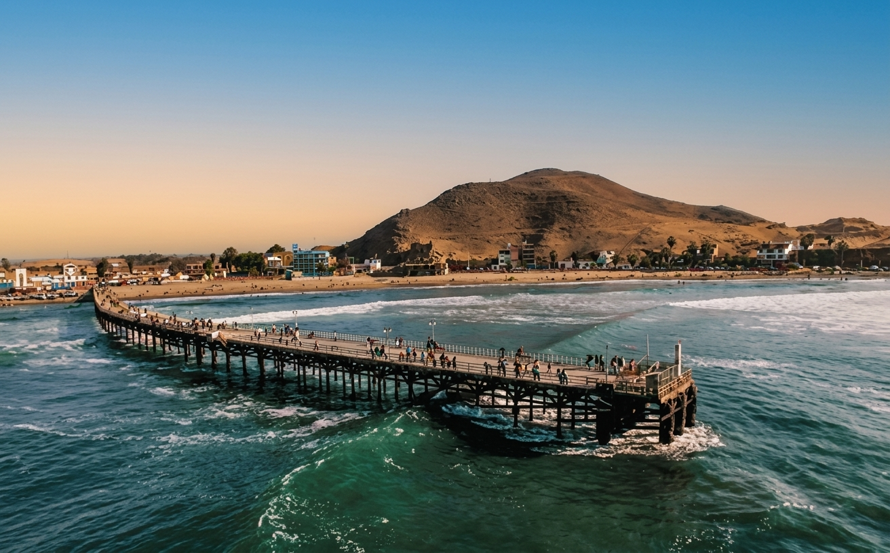

Provincia de Cañete · Lima, Perú
Descubre Cañete en 360°
Dieciséis distritos, una sola provincia y cientos de experiencias entre el mar, el valle y la sierra. Explora rutas de aventura, gastronomía y cultura con Cañete 360.
Acerca de Cañete
Datos interesantes de la provincia
Información general e informativa sobre la provincia de Cañete, ubicada en el sur de Lima, entre el océano Pacífico, el valle agrícola y las estribaciones andinas.
Capital provincial
San Vicente de Cañete es la capital de la provincia y su principal centro comercial, administrativo y de servicios.
16 distritos
La provincia está conformada por 16 distritos que combinan balnearios, valles frutales, bodegas y pueblos andinos.
Cultura afroperuana
Cañete es reconocida como cuna y capital del arte negro, con música, danzas y tradición oral de gran valor cultural.
Gastronomía
Destacan la sopa seca con carapulcra, los camarones, los dulces tradicionales, el pisco y los vinos del valle.
Geografía
Su territorio reúne costa, desierto, valle y sierra, atravesado por el río Cañete, uno de los más importantes de la región.
Historia y economía
Fundada en el siglo XVI, la provincia sustenta su economía en la agricultura, la pesca, el comercio y el turismo.
Destinos
Los 16 distritos de Cañete
Cada distrito tiene su propia ruta turística, sus atractivos, su gastronomía y su cultura. Elige un destino para conocer el recorrido completo y registrar tu viaje.

Asia
Balneario, lomas y huacas frente al Pacífico.
Ver ruta turística →
Calango
Capital de la manzana delicia y de los camarones.
Ver ruta turística →
Cerro Azul
Balneario, puerto pesquero y olas para surfistas.
Ver ruta turística →
Chilca
Lagunas, playas y tradición mística.
Ver ruta turística →
Coayllo
La tierra de los nísperos entre valle y lomas.
Ver ruta turística →
Imperial
Capital comercial del valle de Cañete.
Ver ruta turística →
Lunahuaná
Capital turística: rafting, viñedos e Inca Wasi.
Ver ruta turística →
Mala
Mar, campo, historia y buena gastronomía.
Ver ruta turística →
Nuevo Imperial
El eterno manantial de vida rumbo a la sierra.
Ver ruta turística →
Pacarán
Tierra de la eterna primavera y el buen pisco.
Ver ruta turística →
Quilmaná
Capital de la cordialidad y la amistad.
Ver ruta turística →
San Antonio
Naturaleza, fe y gastronomía cerca de Lima.
Ver ruta turística →
San Luis
Corazón cultural e histórico del valle.
Ver ruta turística →
Santa Cruz de Flores
Capital del vino y el buen pisco.
Ver ruta turística →
San Vicente de Cañete
Corazón del sur chico y capital provincial.
Ver ruta turística →
Zúñiga
La ciudad del eterno sol radiante.
Ver ruta turística →Categorías
Explora según tu experiencia
Panel digital
Reserva y consulta
Cañete 360 conecta a los turistas con las gerencias de servicio de cada distrito. Registra tu recorrido y conoce las gerencias disponibles.